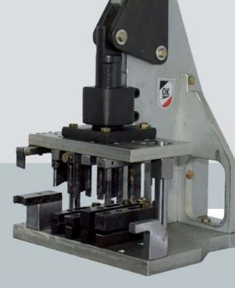
Punzonadora manual
POK 3/8
La línea Herrero completa, pesada y liviana, en una sola punzonadora: perfiles 1, 3, 4, 5, 53 y 54.
Cód. 100005Precio a consultar
Representante oficial OK · Industria argentina
Punzonadoras, prensas, cortadoras y centros de mecanizado con la matricería de cada línea de perfil. Elegí el modelo y pedinos precio y plazo de entrega por WhatsApp.
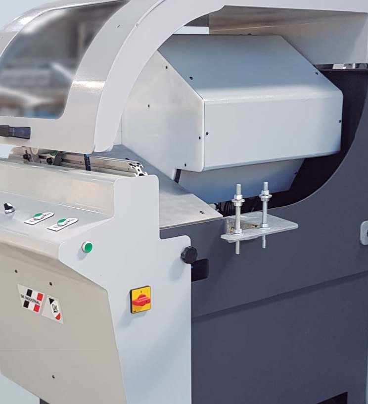
 Representante oficial OKMáquinas, matricería y repuestos originales
Representante oficial OKMáquinas, matricería y repuestos originalesDel corte del perfil al armado de la abertura: elegí una familia para ver sus modelos.
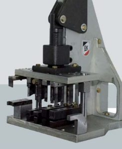
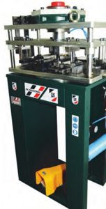
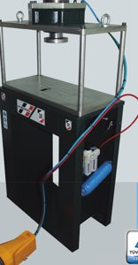
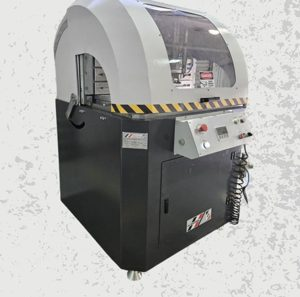
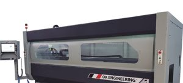
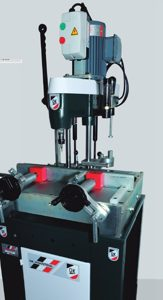

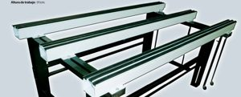
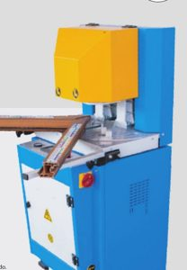
Buscá por modelo, código, línea de perfil o mecanizado. Cada máquina tiene su ficha con datos técnicos y un link propio para compartir.

La línea Herrero completa, pesada y liviana, en una sola punzonadora: perfiles 1, 3, 4, 5, 53 y 54.


Ventanas de abrir, de rebatir, oscilobatientes, puertas y paños fijos Modena a 45º.
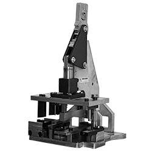
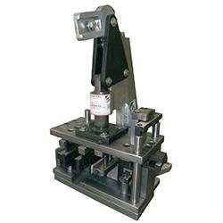
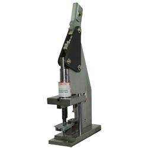
Ojal y agujero de fijación de escuadra en hoja y marco de abrir Modena (escuadras E69, E70 y E75).

Escuadra para marco y hoja de corredizas Modena a 45º (escuadras E83 y E97).
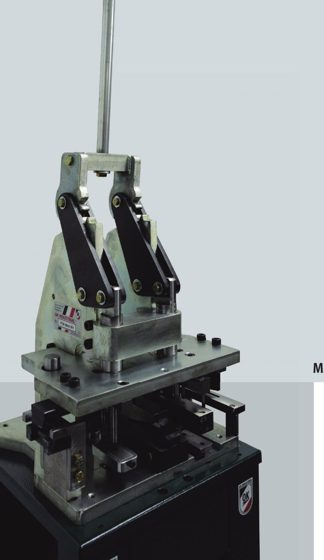
Corredizas A30 y R60. Junto con la POK A30-2 hace los mecanizados principales.
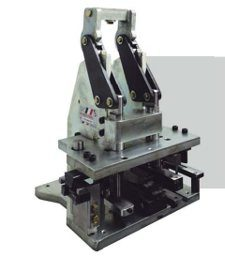
Corredizas A30 y R60. Junto con la POK A30-1 hace los mecanizados principales.
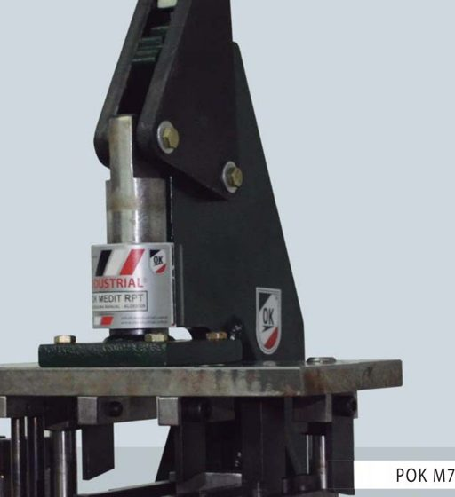
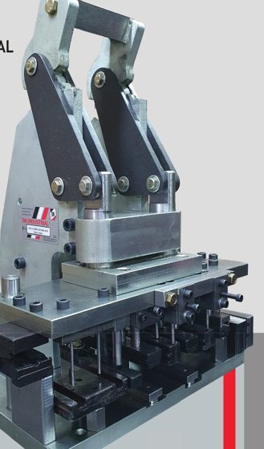
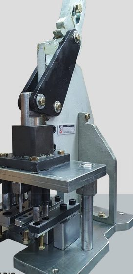
Ranura larga, ranura corta y desagote en los perfiles 1, 3 y 4 de la línea Herrero.
Ranura larga, ranura corta y desagote en los perfiles 1, 53 y 54 de la línea Herrero.
Mecanizado para el encastre del fleje en cortinas de barrio.
Escuadra para marco y hoja de aberturas batientes a 45º.
Escuadras RPT (ruptura de puente térmico) para las líneas Modena, A40, A30 y Altezza de Aluar.
Línea Mediterránea M1, M3 y M5. Junto con la POK MEDIT-2 hace corredizas y ventanas de abrir.
Línea Mediterránea M1, M3 y M5. Junto con la POK MEDIT-1 hace corredizas y ventanas de abrir.

Prensa neumática con la matriz 3/8 para la línea Herrero completa (también Ekonal).
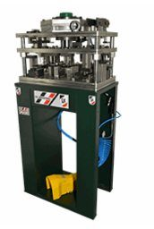
Corredizas Modena a 90º y 45º y ventanas de abrir, batientes y paños fijos A30 sin RPT, en una matriz giratoria.
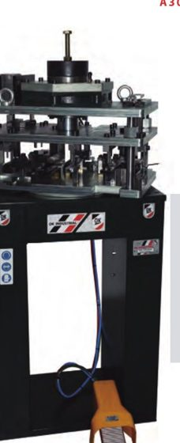
Corredizas A30 NEW con y sin RPT. Las ventanas de abrir A30 sin RPT se completan con la POK M3 o la POK M90/45.
Corredizas A40 de Aluar, con marco a 90º y hoja a 90º o 45º. Con la POK RPT y el cassette A40 Fija Móvil se completa la línea.

Prensa para la línea A40 Compact con los tres cassettes incluidos. Con la POK RPT se completan las ventanas de abrir, batientes y paños fijos.
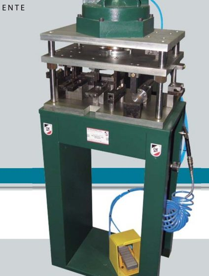
Prensa neumática que acepta cassettes de distintas líneas. Se compra una vez y se le suman las matrices que necesite el taller.
Tres cassettes para mecanizar la línea A40 Compact, incluida la A40 Compact RPT, en la prensa universal.
Cassettes para la línea Nordical de Hydro. Los Nº1, Nº2 y Nº3 hacen la corrediza y el Nº4 la ventana fija móvil.
Ventanas de abrir, batientes y paños fijos HA62, Rotonda 640, 640 EQ y Nordical.
Cassettes para las líneas HA110 y HA110 Vision de Hydro, y sus versiones RPT.
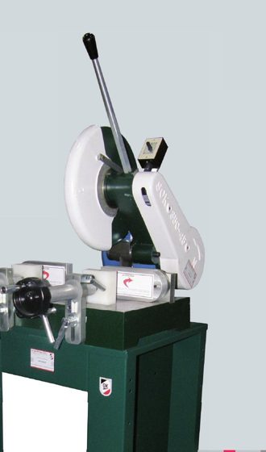
Cortadora de aluminio y PVC con disco de 350 mm. Corta a 90º y 45º girando el plato y a 45º reclinando el cabezal.

La SOK 350-45 con doble morza neumática y base de apoyo, para cortar series sin ajustar cada perfil a mano.
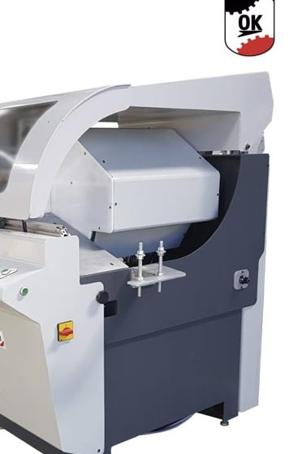
Cortadora de un cabezal ascendente con salida automática del disco por pistón hidroneumático.
Cortadora frontal automática con disco de 550 mm y reclinación automática de +45º a -45º. Corte con mando a dos manos.

Cortadora ascendente para aluminio y PVC con disco de 600 mm y corte angular de 30º a 150º con lectura digital.
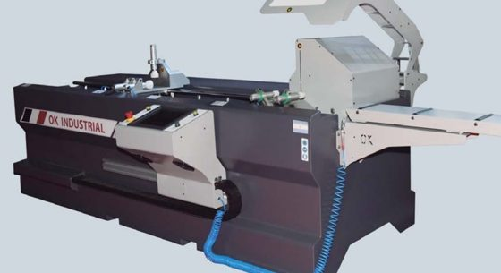
Corte secuencial y en serie de piezas de aluminio y plástico en cualquier ángulo entre 45º, 0º y -45º, con alimentador automático de barra.
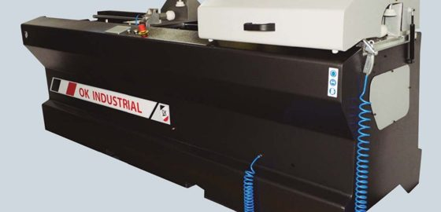
Corte secuencial a 90º de accesorios y piezas de aluminio y plástico, con alimentador automático para barras de largo ilimitado.
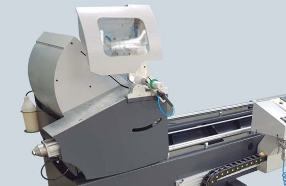
Cortadora de doble cabezal con inclinación automática a 90º, 45º y ángulos intermedios, compatible con los programas de optimización de cortes.
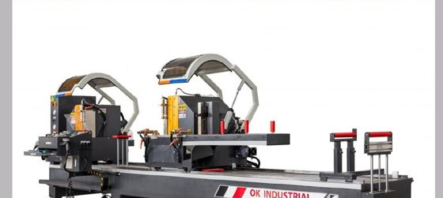
Cortadora de doble cabezal totalmente automática. Lee planillas de corte optimizadas e imprime una etiqueta con código de barras por pieza.
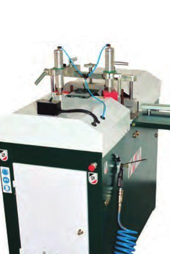

Centro de mecanizado de 4 ejes para perfiles de aluminio y PVC en barra, con bancada rotativa de +90º a -90º y cambio automático de 7 herramientas.

Centro de mecanizado de 4 ejes para perfiles de aluminio, PVC y aleaciones livianas de hasta 3 mm, con bancada rotativa y 6 herramientas.

Copiadora CNC para taladrar, fresar ranuras y hacer agujeros de forma en perfiles de aluminio, con mesa giratoria de ±90º.
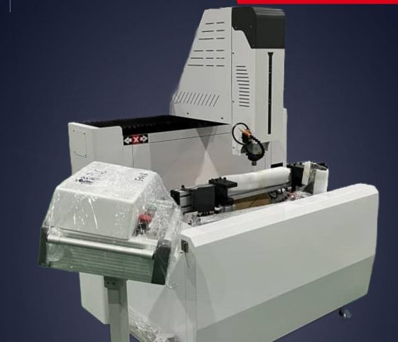
Fresadora copiadora CNC para resolver múltiples operaciones en puertas y ventanas de aluminio y PVC: agujeros, ranuras y formas especiales.

Router horizontal CNC para aluminio compuesto, madera, policarbonato y otros materiales en plancha.
Fresadora copiadora para cerraduras, fallebas, cierres y desagotes. Copia la forma de la plantilla con un perno palpador.

La Copy Plus con sujeción neumática del perfil, lubricación por micro gota y base de apoyo.

Copiadora semiautomática con refrigeración por bidón, panel con parada de emergencia y mando con temporizador.
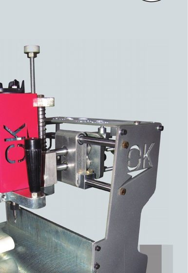
Copiadora portátil para obra y talleres chicos. Trae plantilla para cierre lateral, pestillos, falleba, desagotes y encastres de picaportes.
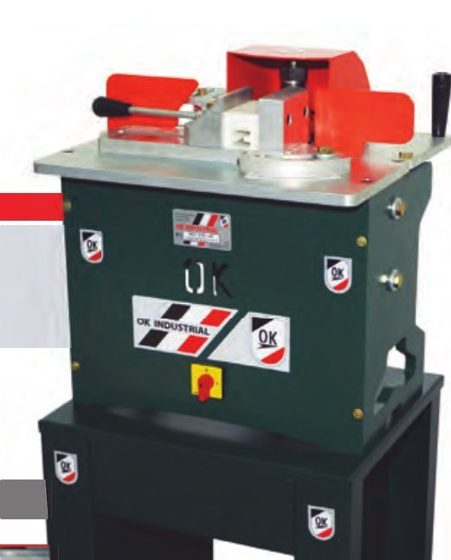
Fresa paños fijos, vidrios repartidos, travesaños y piel de vidrio en todas las líneas de aluminio y PVC cambiando el paquete de fresas.
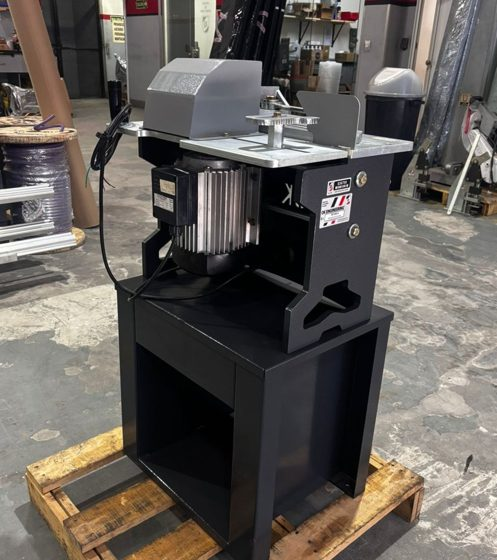
Retestadora manual con morza a 90º para mecanizar las puntas de travesaños y parantes. Se entrega sin fresas.
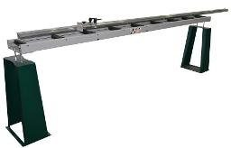
Mesa de medición con rodillos de 4 metros y tope manual, a la derecha o a la izquierda de la cortadora.
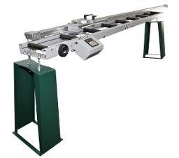
Mesa de salida con medición digital y tope a manivela. Se acopla a todas las cortadoras.
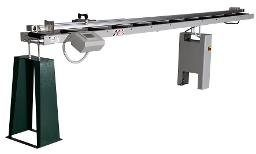
Mesa de medición motorizada con pantalla táctil: el operario carga la medida y el tope se posiciona solo.
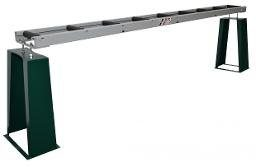
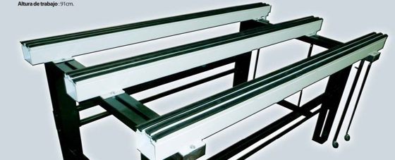
Mesa extensible en largo y ancho para armar aberturas de aluminio y PVC, con apoyo central móvil y seis gavetas.
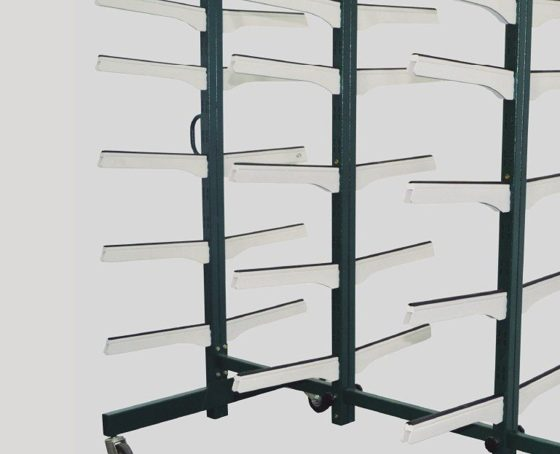
Carro con ruedas y ménsulas regulables que acompaña los perfiles cortados desde la cortadora hasta el armado.
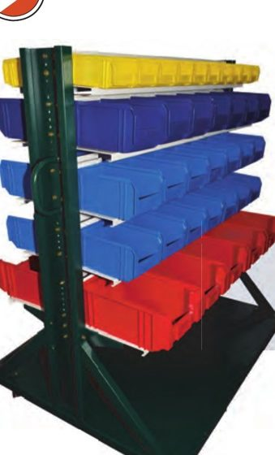
Carro para guardar y trasladar tornillería, escuadras, herrajes y accesorios, con superficie inferior para rollos de felpa y burlete.
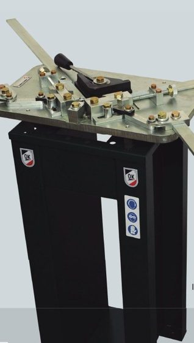
Ensambla los marcos de mosquitero de la línea Herrero con escuadras a presión, sin tornillos ni remaches.
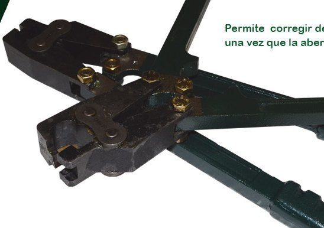
Corrige desagotes de obra en aberturas ya colocadas. Sirve para Modena, Herrero, Rotonda y otras líneas.
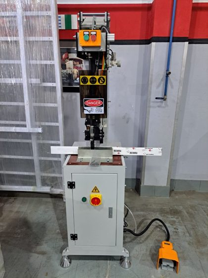
Atornilladora automática con sistema perpendicular y pedal, para fijar tornillos en estructuras metálicas.
Soldadora de un cabezal controlada electrónicamente, con apertura de 160 mm para marcos de 3 guías Rehau.
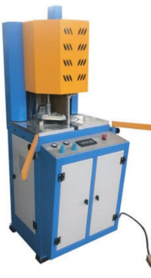
Soldadora de un cabezal para trabajo pesado, con apertura de prensores de 200 mm y gabinete reforzado.
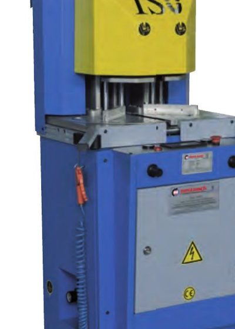
Soldadora de esquinas con cordón de 0,2 mm, para soldar marcos y hojas de PVC en ángulos de 30º a 180º.
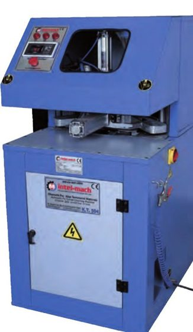
Limpia el cordón de soldadura en las caras superior, inferior y canto de los perfiles de PVC, con selección automática entre 4 fresas.
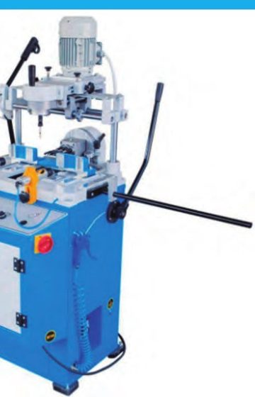
Copiadora con plantilla y cabezal de tres mechas para manijas y cremonas en hojas de PVC, y desagües en los perfiles.
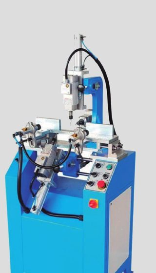
Fresadora de desagües con tres motores que trabajan juntos o por separado, para agilizar la producción de aberturas de PVC.
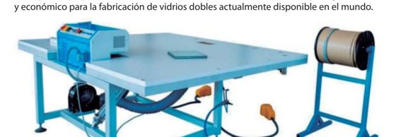
Prensa compacta para fabricar doble vidriado hermético (DVH) con el sistema Panaspacer.
Copiadora con cabezal cremonero para hacer los alojamientos de manijas y cremonas en hojas de PVC.
Prensa hidráulica para cortar y punzonar los refuerzos galvanizados de las aberturas de PVC.
No encontramos esa máquina en el catálogo.
Preguntar por WhatsApp